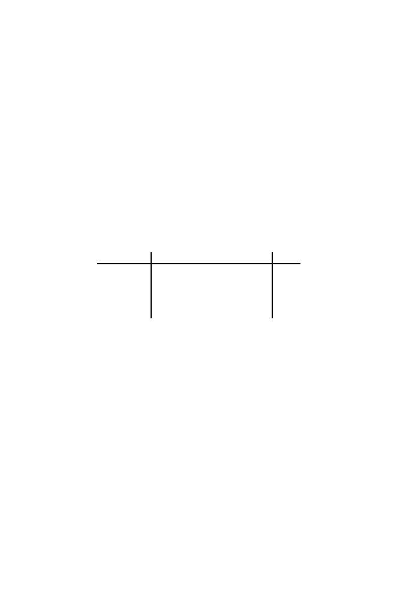

180
7 Rapid Alignment Methods:
FASTA
and
BLAST
J =
C C A T C G C C A T C G
I =
G C A T C G G C
We use subsequences of length
k
= 5. For the
neighborhood size
, we use all 1-
mismatch sequences, which would result from scoring matches 1, mismatches
0, and the test value (threshold)
T
= 4. For sequences of length
k
= 5 in the
neighborhood of
GCATC
with
T
= 4 (excluding exact matches), we have:
⎧
⎨
⎩
A
C
T
⎫
⎬
⎭
CATC
,
G
⎧
⎨
⎩
A
G
T
⎫
⎬
⎭
ATC
,
GC
⎧
⎨
⎩
C
G
T
⎫
⎬
⎭
TC
,
GCA
⎧
⎨
⎩
A
C
G
⎫
⎬
⎭
C
,
GCAT
⎧
⎨
⎩
A
G
T
⎫
⎬
⎭
Each of these terms represents three sequences, so that in total there are
1 + (3
×
5) = 16 exact matches to search for in J. For the three other 5-word
patterns in I (
CATCG
,
ATCGG
, and
TCGGC
), there are also 16 exact 5-words, for
a total of 4
×
16 = 64 5-word patterns to locate in J.
A
hit
is defined as an instance in the search space (database) of a
k
-word
match, within threshold
T
, of a
k
-word in the query sequence. There are
several hits in I to sequence J. They are
5-words in I
5-words in J
J position(s)
Score
CATCG
CATCG
2, 8
5
GCATC
CCATC
1
4
ATCGG
ATCGC
3
4
TCGGC
TCGCC
4
4
In actual practice, the hits correspond to a tiny fraction of the entire search
space. The next step is to extend the alignment starting from these “seed” hits.
Starting from any seed hit, this extension includes successive positions, with
corresponding increments to the alignment score. This is continued until the
alignment score falls below the maximum score attained up to that point by a
specified amount. Later, improved versions of
BLAST
only examine diagonals
having
two
nonoverlapping hits no more than a distance
A
residues away from
each other, and then extend the alignment along those diagonals. Unlike the
earlier version of
BLAST
, gaps can be accommodated in the later versions.
With the original version of
BLAST
, over 90% of the computation time
was employed in producing the ungapped extensions from the hits. This is
because the initial step of identifying the seed hits was effective in making this
alignment tool very fast. Later versions of
BLAST
require the same amount
of time to find the seed hits and have reduced the time required for the
ungapped extensions considerably. Even with the additional capabilities for
allowing gaps in the alignment, the newer versions of
BLAST
run about three
times faster than the original version (Altschul et al., 1997).
7.4.2 Anatomy of
BLAST
: Scores
The second aspect of a
BLAST
analysis is to rank-order the sequences found
by p-values. If the database is
D
and a sequence X scores
S
(
D
,
X) =
s
against